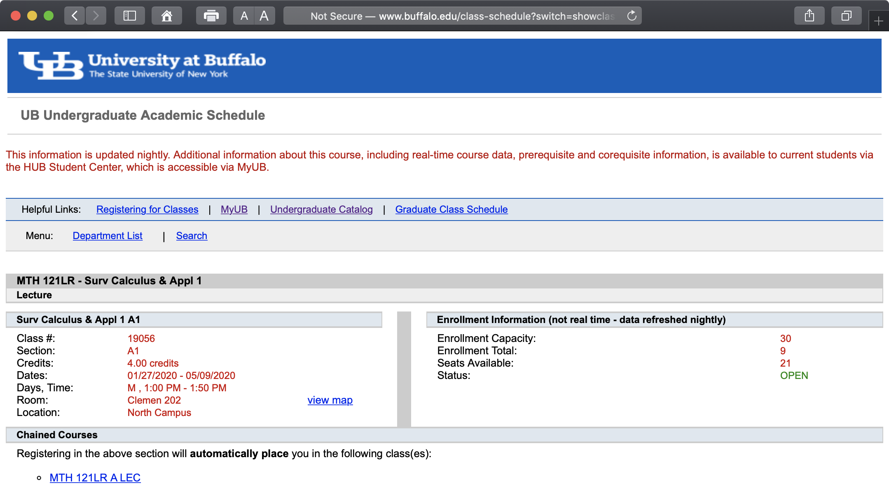

Scrapping course listings¶
Course listings¶
The following web page shows a table of UB undergraduate courses offered in the spring semester:
http://www.buffalo.edu/class-schedule?switch=showcourses&semester=spring&division=1&dept=MTH
Each table row contains data about a lecture, recitation etc. In addition, the Course column of the table contains links to pages with more detailed information. In particular, these individual pages list enrollment capacity and enrollment total for each course.
Exercise¶
Use Beautiful Soup to scrap these web pages for information about math courses, including enrollment capacity and enrollment total.
Create a pandas dataframe containing information about all courses. Columns of the dataframe should be the same as columns of the main web page with course listing. Two additional columns should give the enrollment data.